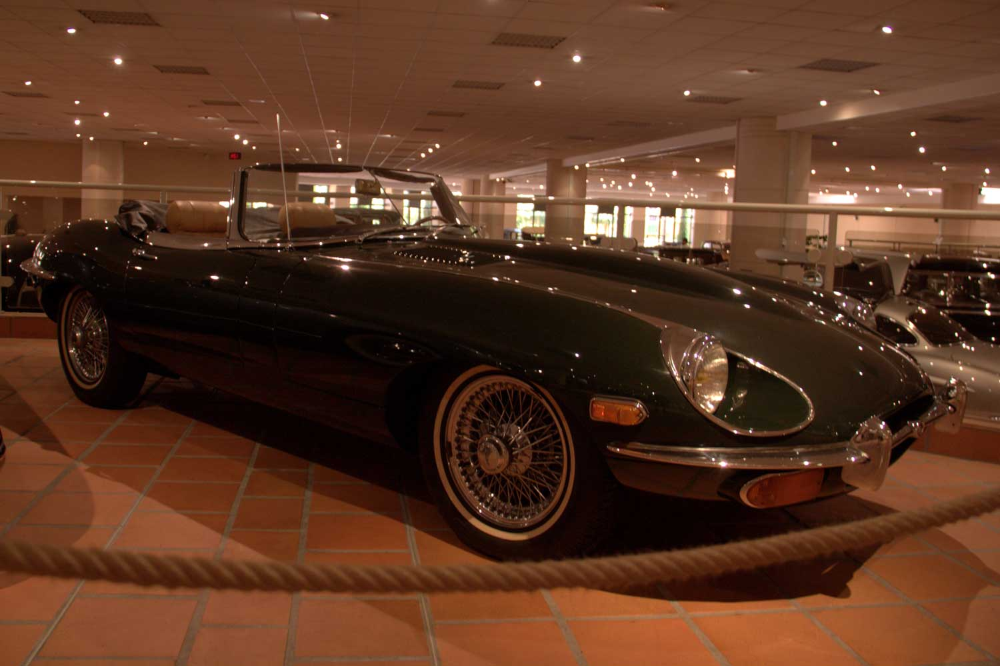

<div class="modal modal-overlay" ui-if='modal2' ui-state='modal2'>
  <div class="modal-dialog">
    <div class="modal-content">
      <div class="modal-header">
        <button class="close"
                ui-turn-off="modal2">&times;</button>
        <h4 class="modal-title">Jaguaari</h4>
      </div>
      <div class="modal-body">
        <!-- lisää teskti ja kuva tähän -->
        <p>Jaguar Cars on brittiläinen autonvalmistaja. Nykyisin Jaguar Cars on toinen Jaguar Land Rover Automotive PLC:n tavaramerkeistä yhdessä Land Roverin kanssa. Jaguar tunnetaan kauniiden, urheilullisten luksushenkilöautojen ja urheiluautojen valmistajana.<br></p>
     
      </div>
      <div class="modal-footer">
        <button ui-turn-off="modal2" class="btn btn-default">Sulje</button>
      
      </div>
    </div>
  </div>
</div>